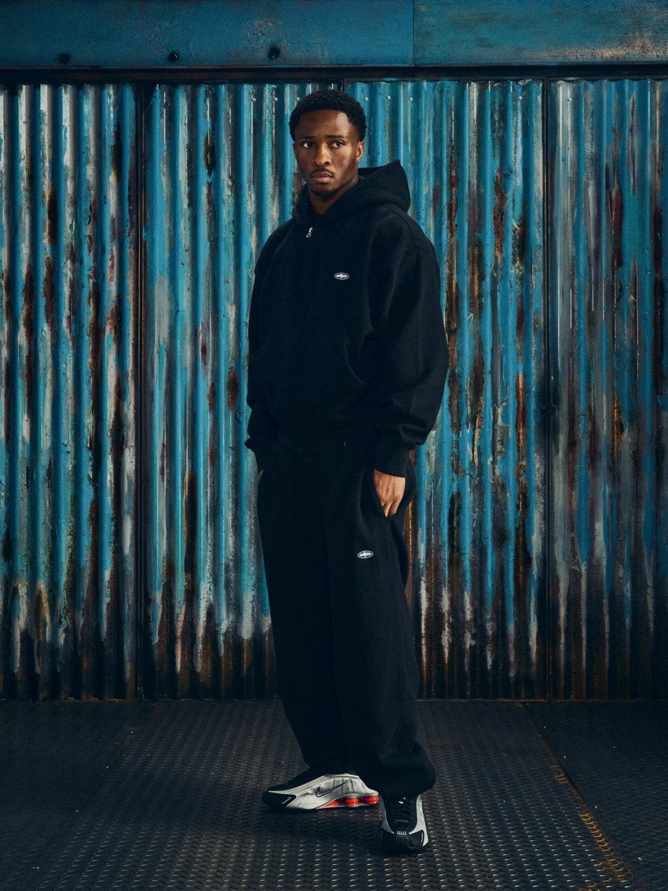

Inicio
Sobre nosotros
Shop All
Contacto
Blog
MI CUENTA
ES / EN
LETWELVE JOURNAL
THE BLOG

STYLE GUIDE · 01
5 formas de combinar un chándal y crear un outfit urbano
LEER ARTÍCULO ↗
STREETWEAR · 02
La comodidad también es estilo
LEER ARTÍCULO ↗
HOW TO · 03
Cómo crear un look streetwear desde cero
LEER ARTÍCULO ↗
CULTURE · 04
Streetwear: mucho más que una forma de vestir
LEER ARTÍCULO ↗